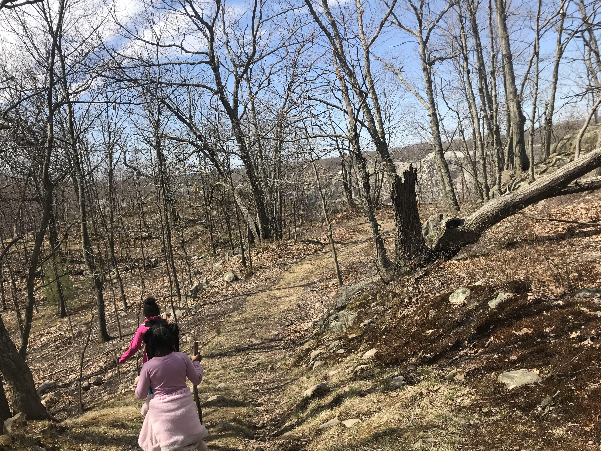

Meet Massachusetts Homeschoolers: The BLESSED Family
By DommiesBlessed
Where’s the schooling? Where’s the structure?
I could feel my throat tightening as my husband and father to our three girls asked me what seemed to be rhetorical questions. Why can’t he see that our children are happy, healthy, and brilliant? Has he read their monthly progress notes where I document their growth? Has he asked them what they are most proud of this week? What’s wrong with them playing with their dolls, studying on YouTube, gaming on Roblox, and building on Minecraft?
Of course, this is a significant amount of screen time, but asynchronous exploration is currently their chosen form of e-learning. Prior to me giving birth to our ten-month-old, their schedules were packed with dancing school, sewing class, swimming, gymnastics, and trips to libraries and museums. Nowadays it’s chilly outside. And the world is literally shut down.
There have been major shifts in our lives and I’m super grateful that our girls are able to enjoy each other’s company (a drastic improvement from a couple of years ago when they would literally fight all day and could not figure out how to play together).
I felt personally attacked and was deeply hurt by what felt like him accusing me of not doing enough, or worse, me being a negligent parent. Putting all that aside, I looked in his eyes and took a deep breath.
I asked, What would you like their days to look like?
His response, I don’t know.
We slept with plenty of silence and a fat pillow in between us that night.
In the morning, he went to work, which gave me ample time to reflect. I started with what I’m thankful for. I’m thankful that my husband supported our daughters’ decision to be homeschooled. On this journey, he would often stock up on books and suggest new sports and activities for us to incorporate in our schedules. He has made it clear that his duty as a father is to make sure they are able to thrive before we leave this Earth. This highlighted our shared vision of making sure our children are better off than we were. Which led me to be thankful that our girls have two parents invested in their future who are willing to have the difficult conversations to carry it out.
It was then that I realized I was definitely being defensive when my husband asked about schooling
and structure.
And this disagreement played an integral part in our homeschool process. In an effort to strengthen our family as a whole, we have to...
- have productive conflicts through open communication,
- de-escalate situations when one of us is angry,
- build trust,
- work together as a team,
- maintain healthy relationships,
- and continue developing our family socialization skills for the betterment of our unit.
I learned that my husband and I have very different ideas about schooling. For example, he grew up with grades. I grew up with progress notes. I strongly believe in self-motivation, self-discovery, and self-education. He strongly believes in structure. It helped me see that my free-spirited childhood was in deep contrast to his regimented one. And that we have the perfect opportunity to create the ideal amount of freedom and structure that will help our children thrive. Working together to create a strong and cohesive homeschool unit has been a work in progress. Each season reveals a different obstacle we have to overcome.
I hope this serves as encouragement to other families who may have differing goals, visions, or homeschool perspectives within their own households. I’m assuming dynamics constantly change as each family member evolves, but these are the fundamental life skills needed to accomplish our real life’s work.
Wishing you and your family much peace and love on your homeschooling journey.
DommiesBlessed is a Boston mom whose proudest moments include delivering one child on a bed, one in the kitchen, and one on a couch. Read more at Dommie’s blog.